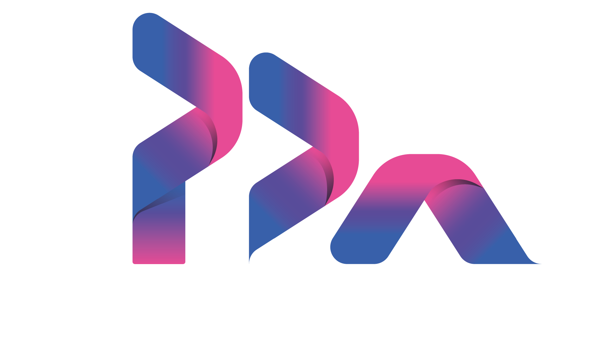
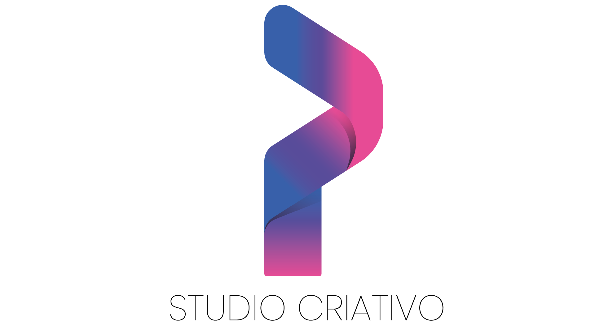
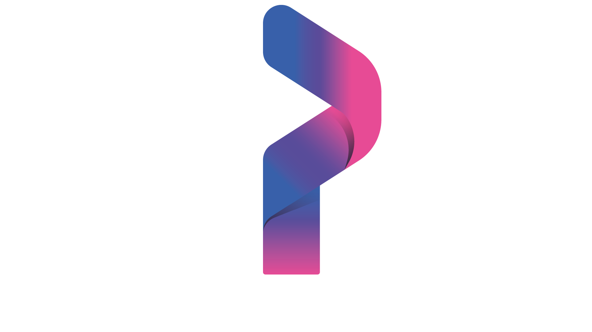

Sua marca precisa parecer tão profissional quanto o trabalho que você entrega.
Uma identidade visual bem construída transforma a forma como sua empresa é percebida. Desenvolvo sistemas visuais completos para criar consistência, reconhecimento e uma presença profissional em todos os pontos de contato da marca.

Uma identidade construída do zero.
A PDA Studio Criativo precisava de uma identidade capaz de representar criatividade, tecnologia e versatilidade em uma única linguagem visual.
O projeto foi desenvolvido para criar uma marca reconhecível e consistente, preparada para funcionar tanto no ambiente digital quanto em diferentes aplicações da empresa.
Uma identidade pensada
para ser reconhecida.
A identidade foi construída como um sistema visual, permitindo que a marca mantenha personalidade e consistência em diferentes formatos, canais e aplicações.


Símbolo da marca
O símbolo foi desenvolvido para preservar a identidade da marca mesmo em aplicações reduzidas e espaços onde o logo completo não é necessário.

Uma forma simples, reconhecível e preparada para diferentes escalas.
Paleta de cores
Uma paleta vibrante que combina tecnologia, criatividade e personalidade em uma identidade visual marcante.
Tipografia
A tipografia complementa a identidade visual e garante consistência, personalidade e legibilidade em diferentes aplicações.
Poppins
ABCDEFGHIJKLMNOPQRSTUVWXYZ
abcdefghijklmnopqrstuvwxyz
0123456789
Aplicações da marca
A identidade ganha vida quando aplicada em diferentes pontos de contato da marca.


Uma identidade criada para ser reconhecida em qualquer aplicação.
Sua marca também pode ter uma identidade
feita para ser reconhecida.
Da estratégia às aplicações, desenvolvo uma identidade visual completa para dar consistência, personalidade e presença à sua marca.
Quero criar minha identidade → ← Voltar aos projetos